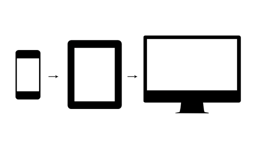
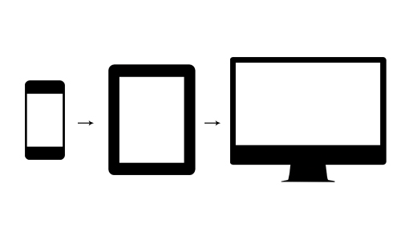

Responsive
Web Design
Introducción
Es un enfoque de diseño web que apunta a crear sitios que provean una visualización e interacción adaptada a una amplia cantidad de dispositivos.

Ejemplo de Responsive

Box Model

Mobile First
 

CSS Media Queries
Mobile Breakpoint
@media (max-width: 460px) {
.navbar {
/* Mobile style */
}
}
Tablet Breakpoint
@media (max-width: 768px) {
.navbar {
/* Tablet style */
}
}
Desktop Breakpoint
@media (min-width: 768px) {
.navbar {
/* Desktop style */
}
}